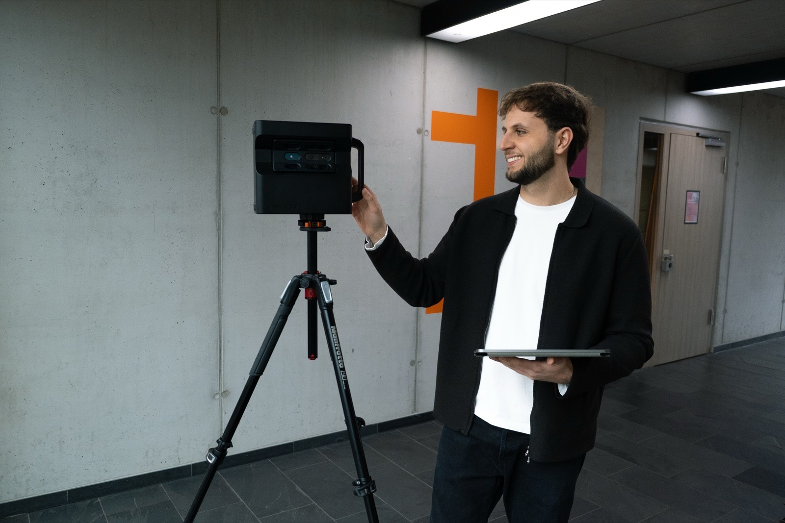

Ratgeber › Vorbereitung
Location optimal auf den 3D-Scan vorbereiten
Eine virtuelle Tour ist gnadenlos ehrlich. Die Kamera erfasst jeden Winkel in 360 Grad – auch den Putzeimer hinter der Theke und den Stapel Kartons in der Ecke. Eine Stunde Vorbereitung entscheidet darüber, ob das Ergebnis einladend oder beliebig wirkt.

Den richtigen Zeitpunkt wählen
Der wichtigste Punkt kommt zuerst, weil er sich am schlechtesten kurzfristig korrigieren lässt: Während des Scans sollten möglichst keine Personen in den Räumen sein. Menschen, die sich während der Aufnahme bewegen, erscheinen im 3D-Modell verzerrt oder mehrfach – ein Effekt, der sich nachträglich nur aufwendig beheben lässt.
In der Praxis funktionieren zwei Zeitfenster gut: vormittags vor der Öffnung oder an einem Ruhetag. Für ein Café heißt das oft 8 bis 11 Uhr, für eine Eventlocation ein Wochentag ohne Buchung. Der Betrieb muss dafür nicht komplett stillstehen – wir arbeiten uns raumweise vor, sodass hinter uns bereits wieder genutzt werden kann.
Tageslicht mitdenken
Räume mit großen Fensterflächen profitieren von Tageslicht, aber direkte Mittagssonne erzeugt harte Kontraste zwischen hellen Fenstern und dunklen Ecken. Ideal ist gleichmäßig bedeckter Himmel oder der Vormittag. Wenn deine Location eine Terrasse oder einen Außenbereich hat, sollte dieser Teil in die Zeitplanung einfließen – Außenaufnahmen bei Regen wirken selten einladend.
Die Checkliste für den Aufnahmetag
- Alle Lampen einschalten Auch dekorative Beleuchtung und Vitrinenlicht
- Defekte Leuchtmittel tauschen Eine dunkle Lampe fällt im Modell sofort auf
- Persönliche Gegenstände wegräumen Taschen, Jacken, Handys, Schlüsselbunde
- Papierkram und Ordner verstauen Besonders an Theken und Arbeitsplätzen
- Reinigungsmittel und Eimer entfernen Der häufigste Störfaktor in Gastronomiebetrieben
- Kartons und Leergut aus dem Sichtbereich Auch aus Fluren und Nebenräumen
- Tische eindecken oder gleichmäßig abräumen Halb gedeckt wirkt unaufgeräumt
- Stühle ausrichten Einheitliche Ausrichtung wirkt sofort ruhiger
- Türen öffnen und feststellen Nur begehbare Räume landen in der Tour
- Laufwege für das Stativ freimachen Etwa ein Meter Durchgangsbreite genügt
- Fenster und Glasflächen putzen Schlieren sind im 4K-Bild sichtbar
- Große Spiegel abstimmen Sie können die Raumvermessung stören
Was viele unterschätzen
Spiegel und Glas. Die Kamera misst Entfernungen über Infrarot. Große Spiegelflächen reflektieren dieses Signal und können dazu führen, dass hinter dem Spiegel ein „Geisterraum" entsteht. Kleine Spiegel sind unkritisch, bei großen sprechen wir vor Ort kurz über die beste Lösung – oft genügt es, sie temporär abzuhängen oder abzudecken.
Der Blick nach oben. Anders als beim Foto sieht der Betrachter in einer Tour auch die Decke. Offene Kabel, verstaubte Lüftungsgitter oder eine defekte Deckenleuchte fallen dadurch auf. Ein kurzer Rundblick nach oben vor dem Termin lohnt sich.
Was fest verbaut ist, bleibt. Möbel und Dekoration lassen sich vor der Aufnahme arrangieren – danach nicht mehr. Wenn du also ohnehin planst, die Sitzecke umzustellen oder neue Bilder aufzuhängen: vorher machen, nicht nachher.
Speziell für Gastronomie
Bei Restaurants, Cafés und Bars entscheidet die Bestuhlung über den Eindruck. Ein Raum mit sauber ausgerichteten, eingedeckten Tischen wirkt professionell; derselbe Raum mit hochgestellten Stühlen wirkt geschlossen. Wenn du eine Terrasse hast, sollte auch dort die Sommerbestuhlung stehen – ein leerer Außenbereich verkauft sich schlecht. Mehr dazu auf der Seite Virtuelle Touren für Gastronomie.
Speziell für Immobilien
Bei Wohnungen und Häusern gilt: je neutraler, desto besser. Persönliche Fotos, Kinderzeichnungen und Kleidungsstücke lenken ab und erschweren es Interessenten, sich selbst in den Räumen vorzustellen. Bei möblierten Objekten, die leer präsentiert werden sollen, gibt es zusätzlich die Möglichkeit des digitalen Entfernens von Möbeln – Details dazu unter Virtuelle Touren für Immobilien.
Speziell für Büros und Gewerbe
Datenschutz ist hier der zentrale Punkt. Bildschirme sollten ausgeschaltet oder gesperrt sein, Kundenakten und Notizzettel mit Namen aus dem Sichtbereich verschwinden. Whiteboards mit internen Inhalten am besten abwischen. Was einmal im Modell ist, ist öffentlich sichtbar.
Wie lange dauert die Vorbereitung?
Für ein durchschnittliches Café oder Büro reicht meist eine gute Stunde. Bei größeren Objekten mit mehreren Räumen plane eher zwei bis drei Stunden ein – idealerweise am Vortag, damit am Aufnahmetag kein Zeitdruck entsteht.
Vor jedem Termin schicke ich diese Punkte noch einmal als kompakte Liste zu, damit nichts untergeht. Fragen zur Vorbereitung deines konkreten Objekts beantworte ich gern vorab – schreib mir einfach über das Kontaktformular.
Bereit für die Aufnahme?
Schick mir dein Objekt – wir finden einen Termin, der zu deinem Betrieb passt.
Unverbindlich anfragen